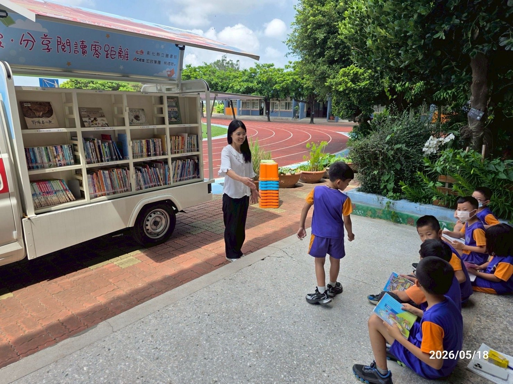
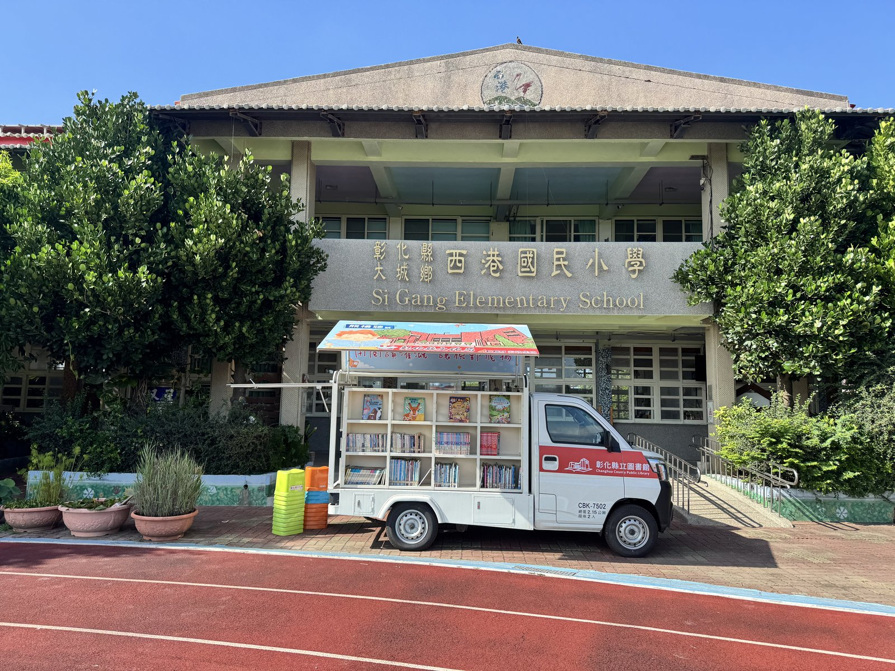

When the Library Came to Sigang
The Changhua County Cultural Affairs Bureau Bookmobile rolled into Sigang and stayed for two whole weeks. The shelves were stacked with picture books, young-adult fiction, science readers, and art monographs — every spine wearing the bright smell of a new book. 彰化縣文化局書車巡迴註校，本次停留西港國小整整兩週。書車裡精選兒童繪本、青少年小說、自然科普、藝術繪畫……一應俱全，每一本都閃著新書的香氣。
As soon as the recess bell rang, children flocked to the truck, scooped up their favourites, and disappeared into corners to read. Under shade trees, along covered walkways, in the library nook — Sigang's bookworms were everywhere, and even lunch break wasn't long enough to put the books down. 下課鐘聲一響，孩子們蜂擁而上，迫不及待捧著喜歡的書找位子坐下閱讀。從廊下、樹蔭到圖書角，到處都是專注的小書蟲，連午休時間也捨不得放下書本。
Thanks to the Cultural Affairs Bureau for bringing the bookmobile to a rural campus. For two weeks, reading wasn't a school subject — it was just the most natural thing to do. 感謝文化局把書車開進偏鄉校園，讓孩子有機會近距離接觸更多元的書籍，也讓「閱讀」成為日常生活裡最自然的一件事。

